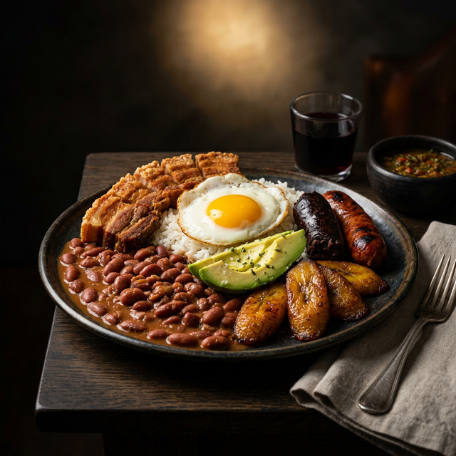
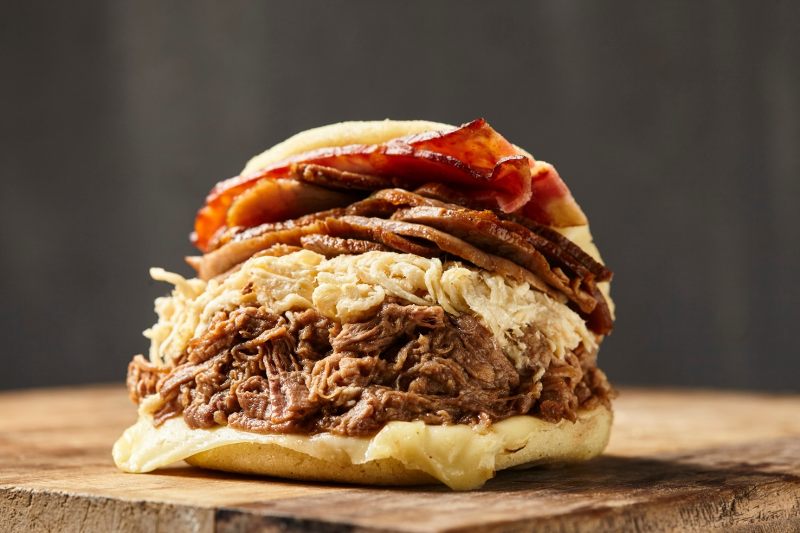

Bandeja Paisa
Un super plato característico de la región de Antioquia con chicharrón, fríjoles, plátano maduro y aguacate.
Un viaje culinario a través de los aromas vibrantes y los colores intensos de las tierras andinas, caribeñas y pacíficas.

Un super plato característico de la región de Antioquia con chicharrón, fríjoles, plátano maduro y aguacate.

Sopa tradicional con tres tipos de papas, pollo, mazorca tierna y la infaltable guasca cundinamarquesa.

Símbolo patrio hechas de masa de maíz con un infinito mundo de rellenos, como queso y carne desmechada.